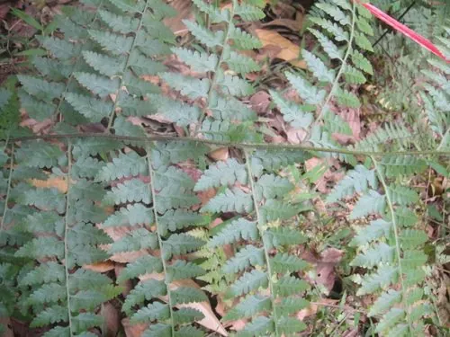

蕨类与裸子植物 · 植物界
华南鳞盖蕨 Microlepia hancei

华南鳞盖蕨的叶片细裂、孢子囊群生于叶缘，外覆半圆形囊群盖，是南方林下与溪边常见的蕨类植物之一。
- 分类
- 门蕨类植物门纲水龙骨纲目水龙骨目科碗蕨科属鳞盖蕨属
- 栖息环境
- 南方山地林下、溪边与沟谷阴湿处，喜温暖湿润半阴
- 地理分布
- 中国华南、西南及华东南部，东南亚也有分布
- 保护级别
- 暂无评估；野生种群常见
物种志
华南鳞盖蕨是碗蕨科多年生蕨类，株高 0.5–1.2 m。根状茎横走，密生鳞片。叶近生或簇生，叶柄粗壮；叶片二至三回羽状复叶，末回小羽片细密，草质，叶面绿色，叶背有毛。孢子囊群圆形，着生于叶缘附近的小脉顶端，囊群盖半圆形或碗形，因此有“鳞盖”之名。
华南鳞盖蕨喜温暖湿润、半阴环境，多生于南方山地林下、溪边与沟谷阴湿处，在华南、西南地区常见。它以孢子繁殖，根状茎可蔓延，常成片生长。华南鳞盖蕨叶形细密、姿态轻盈，适合林下地被与阴湿处绿化。碗蕨科的种类外形相似，鉴定时需观察孢子囊群着生位置、囊群盖形状和叶柄鳞片等细节。它也是南方森林中常见的大型蕨类之一。
形态与习性
- 株高0.5–1.2 m
- 叶二至三回羽状复叶，末回小羽片细密
- 孢子囊群圆形，生于叶缘附近
- 囊群盖半圆形或碗形
- 生境南方林下与溪边
趣味知识
- 华南鳞盖蕨的孢子囊群长在叶缘附近，盖着半圆形的囊群盖。
- 它叶片细裂、姿态轻盈，常成片生长在南方林下。
- 华南鳞盖蕨是碗蕨科中体型较大的蕨类之一。